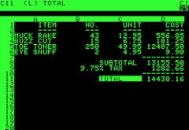
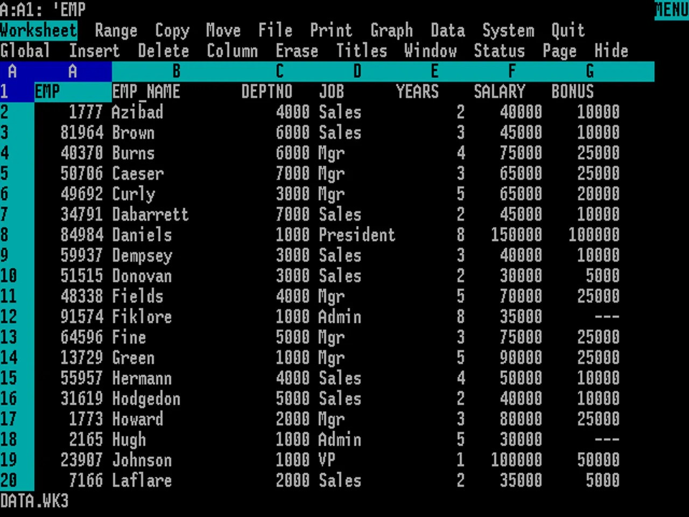
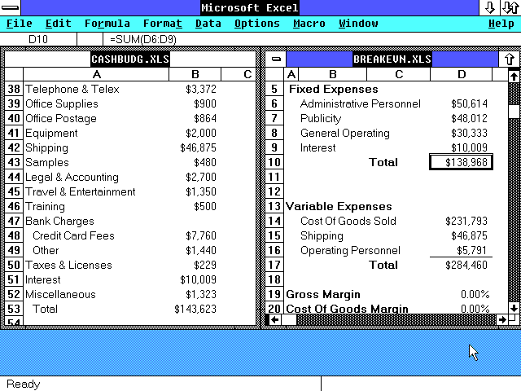
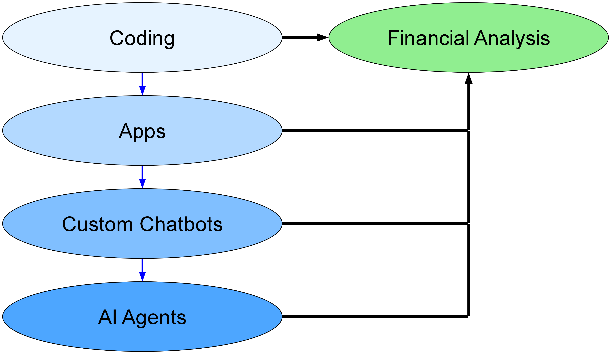
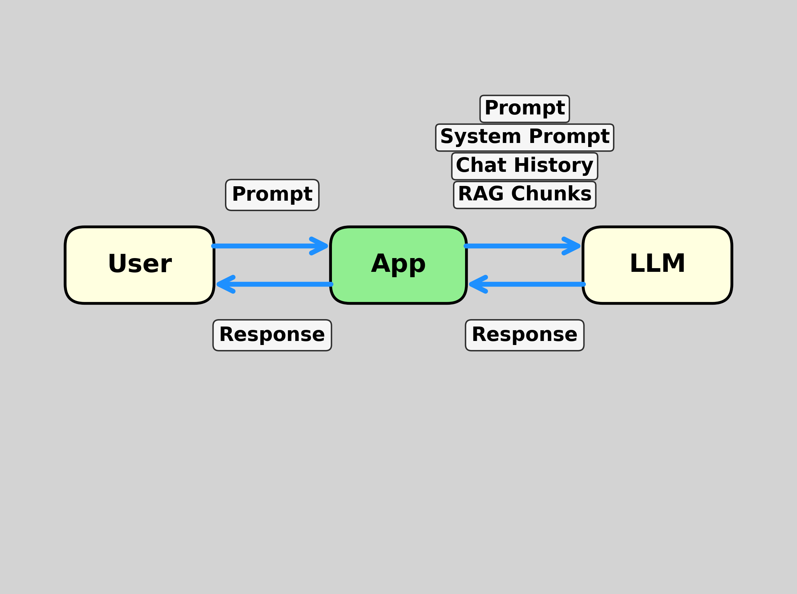
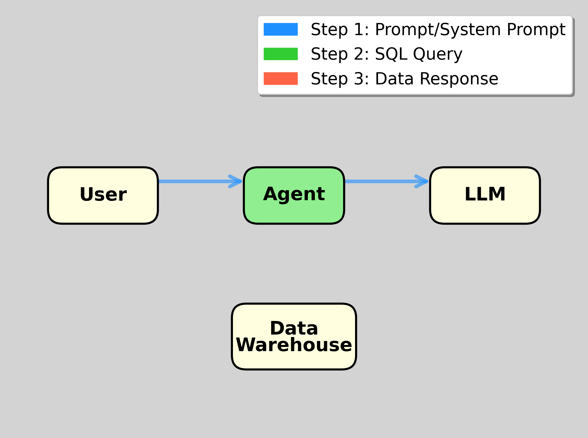
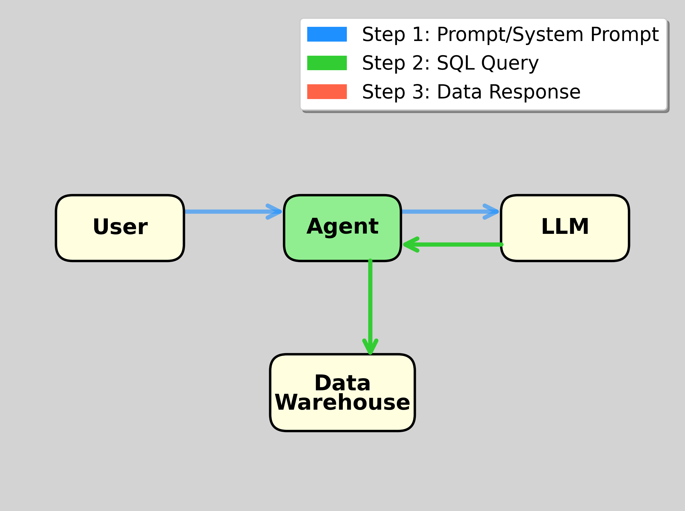
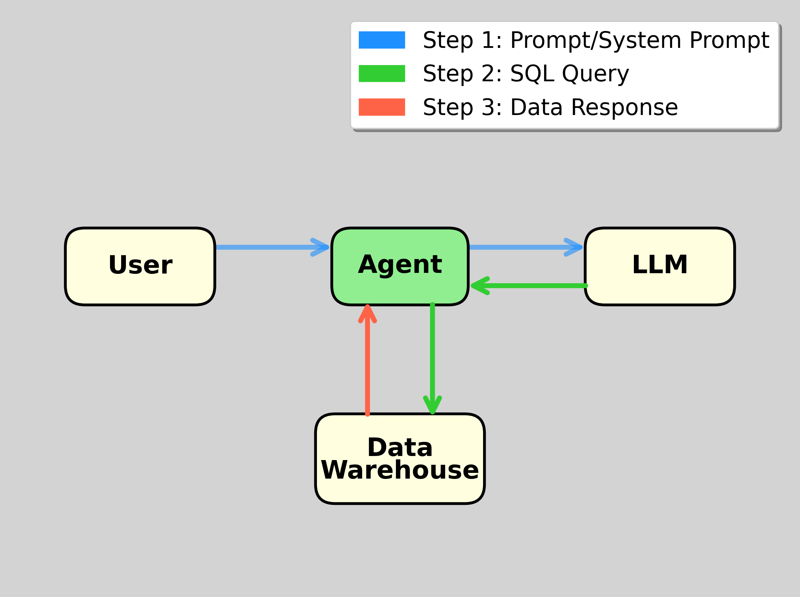
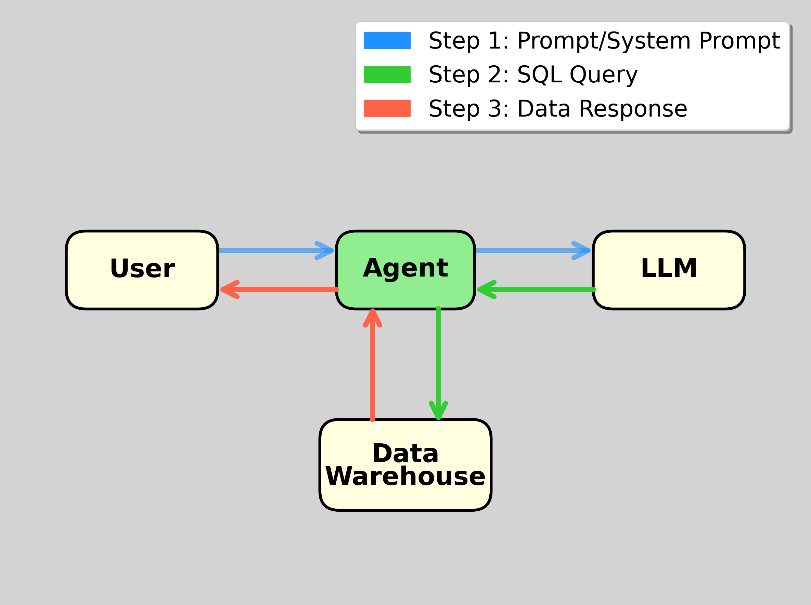

Incorporating AI
into Teaching
Life was the same for 40 years

VisiCalc introduced for the Apple II in 1979

Lotus-123 introduced for the IBM PC in 1983

Microsoft Excel introduced for Windows in 1987
Now, with AI, we’re all in the same boat
It’s hard to keep up!
Plan
- Example of what AI can do today - new Claude skill from September
- Historical analogues?
- A course on AI
- Updating existing courses to use AI
- Deep dive into Claude Code
1. Example (prompt for Claude)
Read the uploaded case (Valuing Walmart 2010). Ignore the valuation method described in the case. Instead, generate pro forma statements and perform a two-stage DCF analysis.
Document your assumptions and your reasons for them. Generate an Excel workbook and a Word doc. Format the Excel worksheets nicely.
Currently requires Claude Max subscription.
2. Historical analogues
- Handheld calculators
- Personal computers
How did teaching and learning change? Are there lessons for today?
Introduction of Handheld Calculators
- Much worry that students wouldn’t learn addition, subtraction, …
- Studies haven’t found an effect
- But primary schools still provide practice and assessments in which calculators are not allowed
- Some hoped that schools could move beyond calculation and teach deeper math
- That didn’t seem to happen
Introduction of Personal computers & spreadsheets
- We added courses on how to use spreadsheets
- We updated existing courses to use spreadsheets
- We assess how well students can use spreadsheets (no pencil and paper valuation analyses)
Teaching how to do finance in spreadsheets is a main goal.
Why?
- Spreadsheets are used in business
- Spreadsheets are ideal for teaching the logic of some things (valuation/capital budgeting)
- Spreadsheets don’t automatically do the things we were teaching before (financial calculators \(\rightarrow\) spreadsheets)
What about AI?
✓ AI is used in business
✓ AI is useful for teaching/tutoring
✗ AI can automatically do many things we were teaching before
AI is more like calculators than spreadsheets. We worry that students won’t learn skills that they need.
Like primary schools and arithmetic, we will need to have practice and assessments in which AI is not allowed
AI is used in Business
MIT/Media Labs State of AI in Business 2025:
Workers from over 90% of the companies we surveyed reported regular use of personal AI tools for work tasks. In fact, almost every single person used an LLM in some form for their work.
Plan
✓ Example of what AI can do today
✓ Historical analogues
A course on AI
Updating existing courses to use AI
Deep dive into Claude Code
3. A Course on AI
- Case on corporate implementation
- Prompt engineering
- Vibe coding for financial analysis
- Building apps, custom chatbots, agents
a. case on corporate implementation
- Describes creation of a custom chatbot
- Discusses reliability, bias, compliance, data privacy, trust of customers
b. Prompt Engineering
- Some students ask for instruction on how to prompt AI
- Special techniques aren’t needed. Practice is.
Ethan Mollick, Wharton, “Good Enough Prompting:”
Treat AI like an infinitely patient new coworker … As it is a coworker, you want to work with it, not just give it orders, and you also want to learn what it is good or bad at … Working with AI is a dialogue, not an order.
The roles of AI
- Do stuff for us
- Collaborate with us
- Advise us
Building an effective prompt to do stuff
- Have a dialogue with AI until we get what we want
- Save clean instructions in form of Step 1. Step 2. …
- Fresh try using saved prompt, iterate more if needed
- Try on a new example, iterate more if needed
- Claude valuation example is a good place to start: build an effective prompt to generate valuation analyses
c. Vibe Coding
In March 2025, Y Combinator CEO Garry Tan and managing partner Jared Friedman stated that
for roughly a quarter of the startups in their Winter 2025 cohort, 95% of the codebase was written by AI.
Vibe coding for finance
- Chatbots with python can easily do many types of financial analyses: regression, mean-variance optimization, binomial-tree option valuation …
- Running python in the cloud:
- ChatGPT, Claude, Google Colab with Gemini, Julius.ai
- Running python locally:
- VS Code, Cursor, Windsurf, Claude Code
d. Building stuff

- Apps can use AI
- Chatbots are apps
- Agents are chatbots with tools
chatbot is an app consisting of
- User interface
- API connection to an LLM, which has possibly been fine-tuned
- System prompt
- Possible retrieval of documents
- Possible use of tools
System prompt is fundamental
A system prompt is text that is sent to the LLM along with each user prompt.
It contains information and instructions for the LLM.
RAG (Retrieval Augmented Generation) chatbots
- Send stored chunks of documents to LLM along with prompt and system prompt
- Choose chunks most relevant to the prompt
- Vector embedding (vector store)
- Similarity search
- Key element of many corporate AI implementations
Chatbot structure

Agent = Chatbot + Tools
- AI agent is a chatbot equipped with tools to do things
- Claude and ChatGPT are agents - they can send code to Python environments
- Database tools are very useful for chatbots
Claude for Financial Services
From Anthropic:
Through data providers, Claude has real-time access to comprehensive financial information:
- Box
- Daloopa
- Databricks
- FactSet
- Morningstar
- Palantir
- PitchBook
- S&P Global
- Snowflake
Why mba students should learn about agents
Fortune, 9-14-2025:
PromptQL, an enterprise AI platform created by San Francisco-based developer tooling company Hasura, is doling out $900-per-hour wages to its engineers tasked with building and deploying AI agents to analyze internal company data using large language models (LLMs).
Tanmai Gopal, PromptQL’s cofounder and CEO, said “MBA types … are very strategic thinkers, and they’re smart people, but they don’t have an intuition for what AI can do.”
database agent passes prompt from user to LLM

May require chatting at this stage to clarify user’s request
agent passes SQL from LLM to data warehouse

Data Warehouse passes response to agent

- Response could be error message
- If so, agent should send to LLM for new SQL code
agent passes data from warehouse to user

- Could be more things connected
- E.g., send data to python engine
- Send python output to user
What can we do in the classroom?
- We can show students how to vibe code apps to automate things
- Getting data
- Financial analysis
- Getting written analysis from AI
- Producing Excel, Word, PowerPoint
- App can include chat feature to clarify which data to get, which tools to use, …
Tools
- Point and click: ChatGPT’s Custom GPTs
- Simplest vibe coding environment: Replit
- Google Colab for Streamlit app and ngrok deployment
- Local: VS Code, Cursor, Windsurf, Claude Code
How do we learn this stuff to teach it: Ask AI
Custom Chatbot without Coding (OpenAI)
- Configure: Name, description, and system prompt
- Add capabilities: Web browsing, DALL-E, Code Interpreter
- Upload knowledge: Documents for RAG (PDFs, text files)
- Add actions: Connect to external APIs (optional)
- Test & publish: Private, link-only, or public to GPT Store
Requires ChatGPT Plus subscription
Plan
✓ Example of what AI can do today
✓ Historical analogues
✓ A course on AI
Updating existing courses to use AI
Deep dive into Claude Code
4. Updating existing courses: what we should teach
- We generally teach concepts first with slides (or board)
- Then show in tools (usually Excel)
- Now, there is a next step: chatbots and agents
Teach about implementation in Excel \(\rightarrow\) students build Excel models.
Teach about implementation in AI \(\rightarrow\) students build prompts or apps
How we should teach
- AI is a very effective tutor
- We should take advantage of it
- Asking students to chat with chatbots can replace “Do the assigned reading.”
- Can be assigned before class or in class before slides.
Ask your chatbot to teach you about … Be sure to tell it to ask you questions to ensure you are understanding.
Controlling the sources
- Build RAG (Google’s Notebook LM or Custom GPT or …)
- If sources are copyrighted, first ask AI for a complete report on the subject, read and edit the AI report, and add to system prompt “Teach from this report …”
But this is probably unnecessary for most topics. The LLMs are much, much more reliable than they were a couple of years ago when everyone was concerned about hallucinations.
How can we assess?
- Out-of-class assignments should become “turn in your chat, its output, and your evaluation of the output” or “turn in your app.”
- In-class exams without AI to ensure students understand concepts
- In-class exams with AI that are more ambitious than exams today. Cases can become exams with AI assistance.
Plan
✓ Example of what AI can do today
✓ Historical analogues
✓ A course on AI
✓ Updating existing courses to use AI
- Deep dive into Claude Code
Claude Code
- Terminal based coding agent - also OpenAI Codex, Gemini CLI
- Can be used as a plug-in to VS Code, Cursor, Windsurf
- Uses standard Anthropic models, but seems to have a great system prompt
Requires Claude Pro subscription.
Capabilities
- Create, edit, copy, move, delete files
- Write, edit, and run Python scripts and notebooks
- Write, edit, and compile LaTeX documents
- Create and edit Word docs and PowerPoint decks
- Create GitHub repos and push and launch apps on hosts (Koyeb, Render, …)
Claude Code Demo
- Create a streamlit app for mean-variance optimization. The user will input the number of assets, their means, standard deviations, and correlations and risk-free rate.
- Compute and display the tangency portfolio. Run the app.
Then: show the code that calculates the tangency portfolio and explain it.
Claude Code in VS Code, etc.
- VS Code, Cursor, Windsurf are full-featured Python and LaTeX IDEs
- Examples of Claude Code for LaTeX and Python:
- Read this paragraph and suggest improvements .
- Make these global edits …
- Do this analysis and generate a figure or LaTeX table and insert it into the document …
Aaron Linsky, CTO, AIA Labs at Bridgewater:
We’ve been developing capabilities powered by Claude since 2023 within AIA Labs.
Claude powered the first versions of our Investment Analyst Assistant, which streamlined our analysts’ workflow by generating Python code, creating data visualizations, and iterating through complex financial analysis tasks with the precision of a junior analyst.
Yeyati, Brookings, 2025:
As AI models begin to handle underwriting, compliance, and asset allocation, the traditional architecture of financial work is undergoing a fundamental shift.
As job descriptions evolve, so does the definition of financial talent. Excel is no longer a differentiator. Python is fast becoming the new Excel.
But technical skills alone will not cut it. The most in demand profiles today are those that speak both AI and finance.